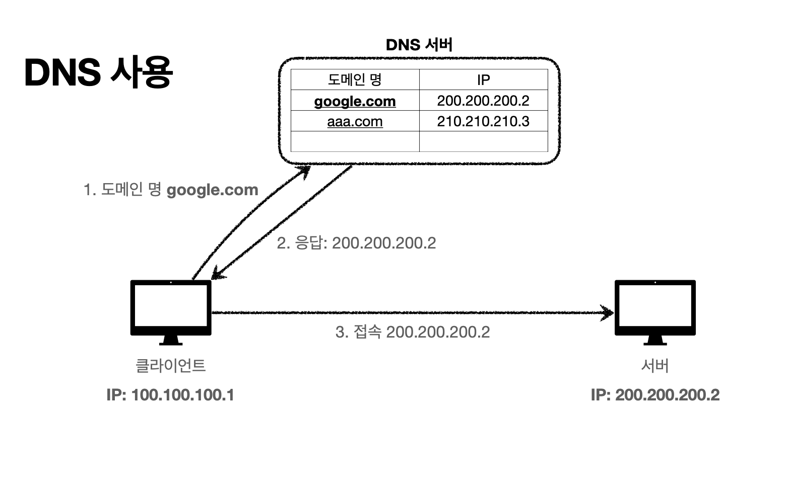

Internet-Network
IP (Internet Protocol)
패킷으로 전달함
한계
- 비연결성
- 패킷을 받을 대상이 없거나 서비스 불능일때도 전송
- 비신뢰성
- 프로그램 구분
같은 ip를 사용하는 서버에서 통신하는 애플리케이션이 둘 이상이라면?
TCP/UDP

TCP
- 연결 지항 - 3방향 핸드쉐이크(가상 연결)

- 신뢰적 전송
- 순서 보장
UDP
아무 기능이 없음
TCP패킷에서 출발지/도착지 PORT, 체크섬 정도만 추가
TCP는 수정을 못하나, UDP는 아무것도 없기때문에 추가 작업 가능
PORT

아파트는 IP, 세대는 PORT
DNS
